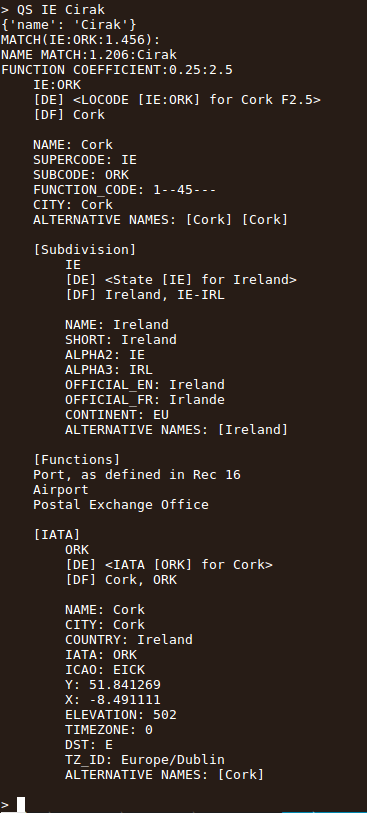
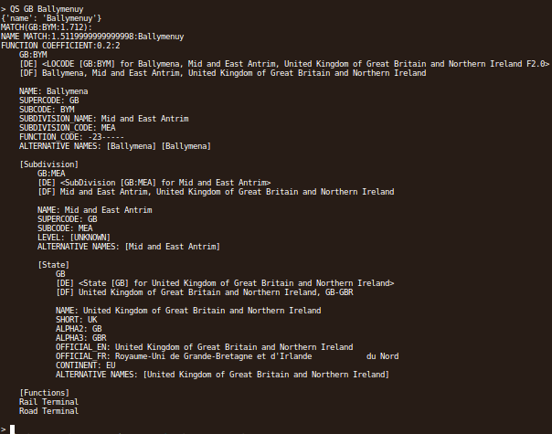

Location Classification
Using UN/ISO standards
Locality scale
What is the task?
Matching up data from various sources indexed by locality
e.g. population of Belfast
Locality scale
What is the problem?
Addressing is not unique or uniform, regionally or internationally
Spelling, script, diacritics...
Not concise or predictable format
Not a single point or region
May be a fluid definition
(or technical definition may not be readily available)
Requirements
Correlating data sets
No licensing issues
No third-party DB hits
Imperfect matching OK, but not going to vanish
What options are there?
Geonames
FIPS
WOEID
Post Codes
Geohash / Open Postcode / etc.
LOCODEs
What's a LOCODE
~100k entries
Since 1981 (Rec No. 18)
Updated twice per year
UN/LOCODE Data Maintenance Request system
Data Management Requests (DMRs)
The Good
International agency standard
Maintained as supragovernmental policy
Open data
Not tainted by local IP issues
Already have linked info
github.com/datasets
The Bad
Coordinate information intermittent
Occasionally mismatched with hierarchy
Politically complex
Can change
The Ugly
Can be obscure, overlapping, or transitional
No clear pre-defined boundaries
Gets vague on administrative boundaries
Solution
Textual matching
seatgeek/fuzzywuzzy
Multiple facets, weighted, inc. IATA
Coordinate matching where available


Applications
IoT
Per-node processing
Offline systems
...or...
Next problem...
Giving places meaning
Aggregation
Reduces coordinate matching issues
Areas composed of LOCODEs
Still no canonical geographic boundaries
What can be done?
UNECE Trade Facilitation Recommendation No. 16
Questions